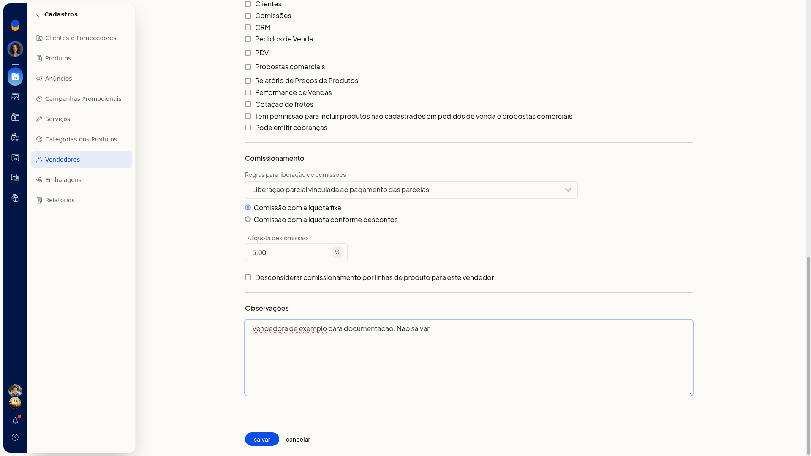
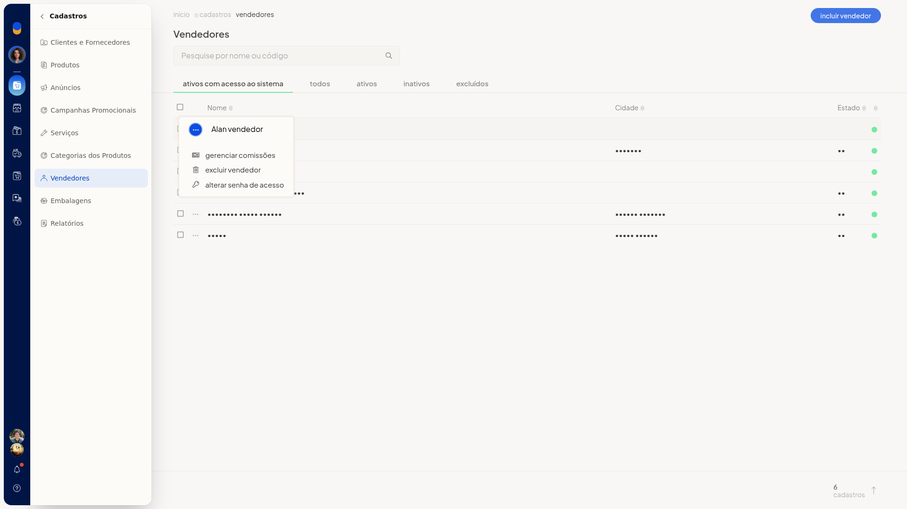

Gerenciar comissões do vendedor
No ERP da Olist, o comissionamento do vendedor define a alíquota e a regra de liberação da comissão. Você pode usar uma alíquota fixa ou faixas conforme o desconto.
O ajuste fica no cadastro do vendedor, em Cadastros > Vendedores. Na lista, a linha do vendedor também oferece Gerenciar comissões.
Importante
- Desconsiderar comissionamento por linhas de produto para este vendedor só aparece se a empresa usa linhas de produto.
Instruções
No cadastro do vendedor
-
Acesse Cadastros > Vendedores.
-
Clique em incluir vendedor.

-
Em Comissionamento, mantenha Comissão com alíquota fixa ou selecione Comissão com alíquota conforme descontos. Esses campos não são obrigatórios.
-
Na alíquota fixa, preencha Alíquota de comissão.
-
Em Regras para liberação de comissões, selecione uma opção. O padrão é Liberação parcial vinculada ao pagamento das parcelas. As demais são Liberação integral no faturamento, Liberação integral após o pagamento da primeira parcela e Liberação de 50% no faturamento e o restante vinculado ao pagamento das parcelas.

-
Se escolher Comissão com alíquota conforme descontos, preencha Desconto de até (%) e Comissão (%).
-
Clique em Adicionar desconto para incluir outra faixa.

-
Clique em salvar para gravar o vendedor com o comissionamento definido.
Na lista de vendedores
-
Acesse Cadastros > Vendedores.
-
Localize o vendedor em Pesquise por nome ou código ou nas abas ativos com acesso ao sistema, todos, ativos, inativos e excluídos.

-
No menu de contexto da linha, clique em Gerenciar comissões.
